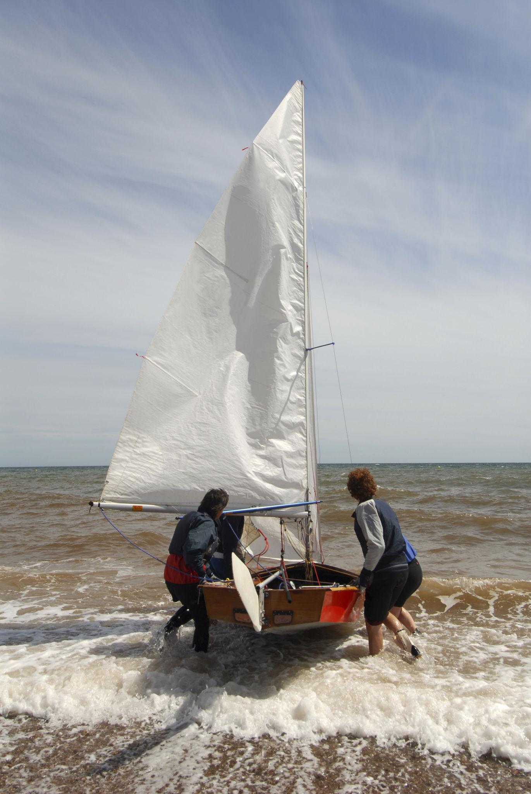
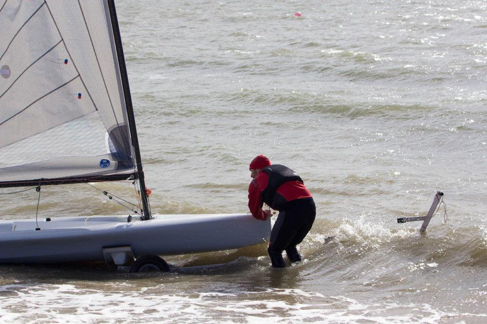

Module 10
Landing
Learn how to safely return to shore, recover your dinghy, and properly secure your boat after every sailing session.
Learning Objectives
After completing this lesson, you should be able to:
- Plan a safe approach back to shore.
- Control the boat while landing.
- Raise the centerboard and rudder at the proper time.
- Exit the boat safely.
- Secure and inspect the dinghy after sailing.
Returning to Shore
A successful sailing session ends with a controlled and well-planned landing. Before approaching the shore, take a moment to observe the wind direction, waves, other boats, swimmers, and any obstacles near the beach or dock.
Avoid sailing directly toward the shore at excessive speed. A slow, controlled approach is easier and safer than trying to stop at the last moment.
Preparing to Land
🌬 Check the Wind
Plan your approach according to the wind direction so you remain in control throughout the landing.
🧭 Reduce Speed
Ease the mainsheet as needed to slow the boat while maintaining enough steerage to remain in control.
⬆ Raise the Centerboard
Gradually raise the centerboard as the water becomes shallower to avoid striking the bottom.
⚓ Raise the Rudder
Lift the rudder before it reaches the bottom while maintaining control of the boat.
Landing Procedure
- Approach the shore at a controlled speed.
- Ease the mainsheet to reduce power.
- Raise the centerboard as the water becomes shallow.
- Raise the rudder before it touches the bottom.
- Step out carefully into shallow water while holding the boat.
- Turn the bow into the wind to depower the sail.
- Pull the boat completely ashore.
After Sailing
Once ashore, secure the boat so it cannot blow away or drift back into the water. Remove any standing water, rinse the boat and equipment with fresh water when possible, and inspect everything for damage or excessive wear.
- Coil and stow all lines neatly.
- Check the sail, mast, boom, rudder, and centerboard.
- Remove sand and salt from moving parts.
- Store the boat securely for the next sailing session.



Common Beginner Mistakes
- Approaching the shore too fast.
- Waiting too long to raise the centerboard.
- Forgetting to lift the rudder.
- Jumping out before the boat is under control.
- Leaving the boat unsecured after landing.
Key Takeaways
- Plan your landing before reaching the shore.
- Reduce speed gradually and stay in control.
- Raise the centerboard and rudder before they strike the bottom.
- Turn the boat head to wind after landing.
- Clean, inspect, and secure your dinghy after every sail.